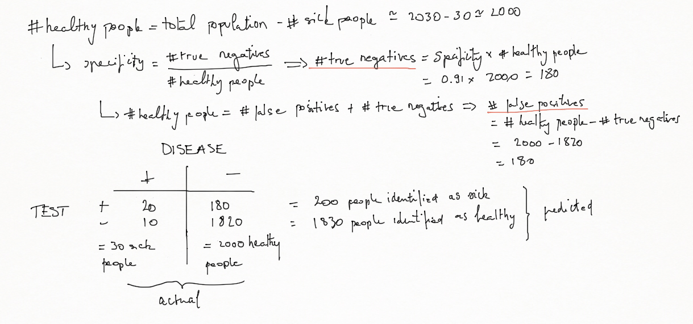

A confusion matrix, also known as a contingency table or an error matrix or tavle of confusion, is a specific table layout that allows visualization of the performance of an algorithm, typically a supervised learning one (in unsupervised learning it is usually called a matching matrix).
It is a table with two rows and two columns that reports the number of false positives, false negatives, true positives, and true negatives.
For example, for a test that screens people for a given disease, the confusion matrix will be:
with
x true positives (TP) : the number of sick people correctly identified as sick
z false positives (FP) : the number of healthy people incorrectly identified as sick
t true negatives (TN) : the number of healthy people correctly identified as healthy
y false negatives (FN) : the number of sick people incorrectly identified as healthy
The following probabilities are associated with the confusion matrix:
\(Sensitivity = Pr\left(positive\ test\ |\ disease\right)\)
\(Specificity = Pr\left(negative\ test\ |\ no\ disease\right)\)
\(Positive\ Predictive\ Value = Pr\left(disease\ |\ positive\ test\right)\)
\(Negative\ Predictive\ Value = Pr\left(no disease\ |\ negative\ test\right)\)
\(Accuracy = Pr\left(correct\ outcome\right)\)
which are computed the following way:
Examples
A diagnostic test with sensitivity 67% and specificity 91% is applied to 2030 people to look for a disorder with a population prevalence of 1.48%.
Let's build the associated 2×2 contingency table:

Suppose that we have created a machine learning algorithm that predicts whether a link will be clicked with 99% sensitivity and 99% specificity. The rate the link is clicked is 1/1000 of visits to a website. If we predict the link will be clicked on a specific visit, what is the probability it will actually be clicked?
Let's be 100000 the number of visits:
According to the confusion matrix above, the probability that the link will be actually clicked is 9%.